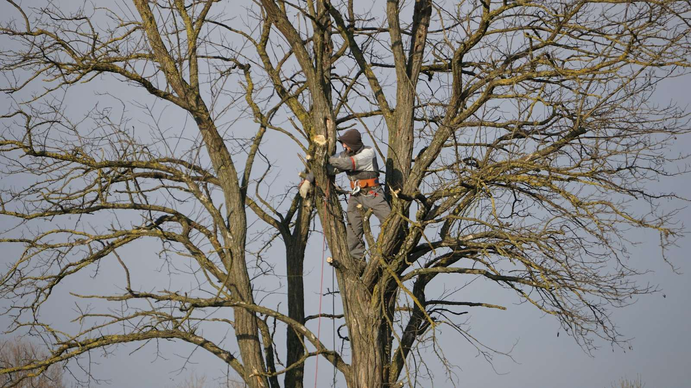

Do you need a permit to remove or trim a tree in the Inland Empire?
Updated October 2026. General information, not legal advice.

Most trees fully on private property in the Inland Empire can be trimmed without a permit, but there are important exceptions. Getting it wrong can mean fines and replacement requirements, so check first.
Heritage trees: Rancho Cucamonga
Rancho Cucamonga requires a tree removal permit before removing, relocating, or topping more than 25% of a heritage tree, even on private property. Heritage trees generally include large trees by height and trunk diameter (20 inches, or 30 inches combined for multi-trunk trees), eucalyptus windrows, and historically significant trees. Dead trees still need a permit, though there's no fee for those.
Street and parkway trees: Riverside and Redlands
Trees in the parkway or public right-of-way often belong to the city.
- Riverside: residents can request work through the city's Tree Care Program, or hire a licensed contractor with a no-fee street tree permit.
- Redlands: trimming, planting, or removing a tree in a city easement or right-of-way requires a Public Tree Encroachment Permit. Removals generally require a replacement tree.
Other cities have their own street tree rules. Call public works before touching a parkway tree.
Joshua trees: Hesperia, Victorville, and the High Desert
Western Joshua trees are protected under the Western Joshua Tree Conservation Act. Removal or trimming generally needs a CDFW permit. CDFW offers a no-cost hazard permit only for dead trees or trees meeting specific hazard conditions.
HOAs and rentals
Many newer neighborhoods (for example in Ontario Ranch, Chino, and Rancho Cucamonga) have HOA rules on front-yard trees. Renters should get the landlord's written OK.
Birds
Even with no permit required, California law prohibits needlessly destroying active bird nests. Check before cutting in spring and summer.
Common questions
Do I need a permit to cut down a tree on my own property in California?
Usually not, but some cities protect heritage or specimen trees on private property (Rancho Cucamonga is one example), and Joshua trees need a CDFW permit. Check your city's rules first.
Who is responsible for the tree in my parkway?
Often the city. In Riverside and Redlands, parkway and right-of-way trees fall under city permit rules.
Get quotes in your city
More guides
- How much does tree removal cost in the Inland Empire?
- When is palm tree trimming season in Southern California?
- Defensible space and brush clearance: what Inland Empire homeowners need to know
- Santa Ana winds and your trees: how to prepare and what to do after
- How to check a tree service's license and insurance in California
Sources
- City of Rancho Cucamonga: Tree removal permit checklist (PDF)
- City of Riverside: Tree Care Program
- City of Redlands: Permit to trim, plant or remove public trees
- CDFW: Western Joshua tree frequently asked questions
- CDFW California Outdoors Q&A: nesting birds
Rules and programs change. Confirm details with the city, county, or agency before relying on them. Checked October 2026.